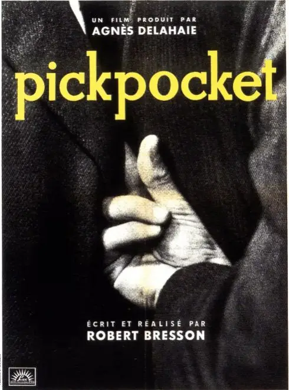
小偷是社会中极特别的存在，他们通过窃取别人的东西得以生存，总是游走在灰色地带，无时无刻不在经历着冒险的刺激和良心上的拷问。
因此，小偷作为一个内心复杂且兼具社会穿透力的角色，历来深受电影大师的喜欢。
今年，是枝裕和就凭《小偷家族》斩获金棕榈大奖，而放眼整个电影史，关于小偷的优秀电影实在太多：意大利新现实主义的经典作品《偷自行车的人》、罗伯特.布列松的代表作《扒手》、希区柯克的《艳贼》、斯皮尔伯格的《猫鼠游戏》.....
华语电影中也有很多杰作，杜琪峰的《文雀》和《暗战》，冯小刚的《天下无贼》，还有让贾樟柯声名远扬的《小武》。
这些小偷都让人难以忘怀，其中罗伯特.布列松镜头下的扒手米歇尔最为特别，他总是面无表情，像游魂一样飘荡在街上寻找合适的目标。
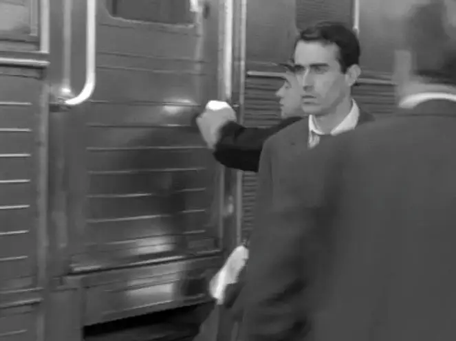
米歇尔喜爱读书，天资聪明，朋友劝他做些正正当当的工作，可他却认为偷窃不是犯罪，而是一门艺术，一场激动人心的冒险之旅，是手指、脚步、身体和欲望的芭蕾......
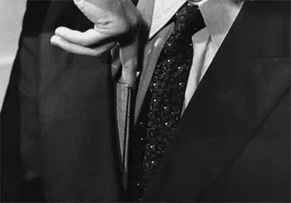
这是一部沉思冷峻的大闷片，多年前学习电影史的时候，我冲着“最当代的电影”的名气去看的。
不到十分钟我就睡着了，电影总给我一种格格不入感，既然是惊心动魄的偷窃，演员的表情好歹要丰富一些，可米歇尔却一直面无表情，他的动作也有些僵硬。
故事从开始到结束也没有什么大的转折。
总之，这是一部让人很难产生共鸣的作品。
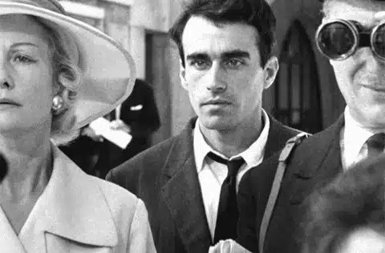
最近，我信心比较软弱，生活中也比较疲累，精力涣散难以保持专注，对很多事情提不起兴趣，脑子总是胀胀的。
可能现在的状态和米歇尔有点像，所以这个扒手这几天总在我脑海浮现，于是，我又将《扒手》刷了一遍。
这一次，依旧没有很大的共鸣，但却多了份观照和自省。
米歇尔是个虚无主义者，他觉得一切都索然无味，而这样无聊透顶的活着本身就是一件极其疲惫的事情。
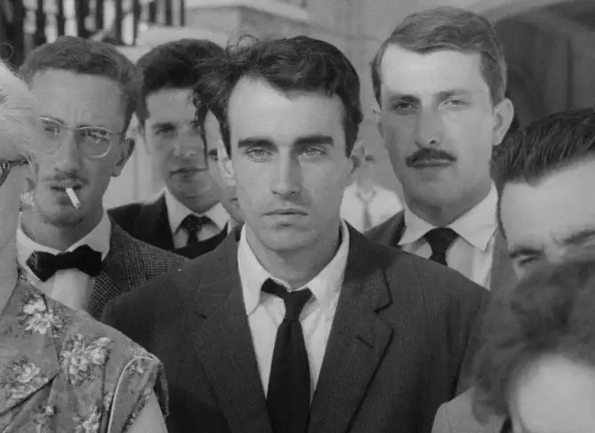
因此，他成为了一个独行侠，成为了一个不要别人烦的人，朋友的好心相劝他拒之门外，母亲卧病在床他漠不关心。
没有知觉，拒绝爱和被爱，米歇尔像是一团躺在案板上的死肉一样，直等着死亡来临。
百无聊赖之下，米歇尔进行了一次偷窃，过程中他非常害怕，但越是害怕，他越是兴奋。
那一次他得手了，他发现自己喜欢上了这种冒险，每一次得手都会让他信心大增，米歇尔的偷技也变得炉火纯青。
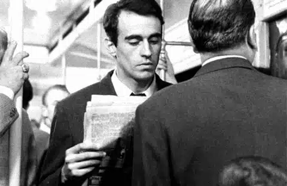
因此，米歇尔作为一个扒手，并不是贫穷所致，而是他新的人生方向和生活方式。
在经历了悲观的虚无主义之后，米歇尔的心境转向一种积极、正面的虚无主义，他要自己面对心中的价值意义，并且以此意义创建人生，米歇尔成为了尼采口中的“超人”。
他的内心深处总是有一种要凌驾众人之上的骄傲，他再也不愿意与平凡人为伍，他成为了一座孤岛，他与朋友、母亲还有可爱的珍妮之间建构起了一道墙垣。
这座孤岛上，他是绝对主宰，这种狂傲甚至不受人间法律和道德的束缚，因此，当一个警察想要给米歇尔机会时，米歇尔却说：
扒手的存在是社会中不可缺少的一部分，有社会价值的小偷并不荒谬，世界本来就是颠倒过来的。
米歇尔将自己看为挑战不合理传统、重构世界秩序的伟人，他骄傲地拒绝了警察给他的悔改机会，粗暴地拒绝了朋友的帮助，他还无情地拒绝了母亲和珍妮的关怀。
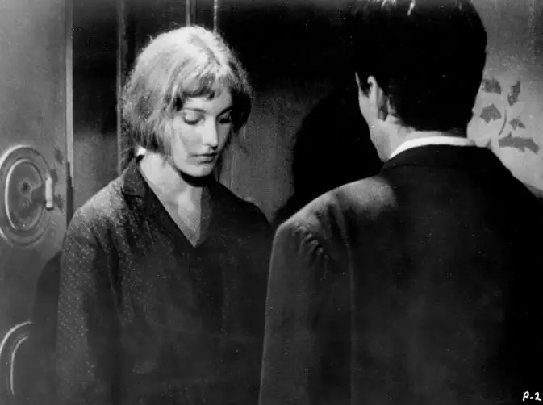
他困顿，他不开心，他骄傲自大，他内心深处知道自己有错，但他无法承认，无法回头。
他住在一个小屋里，只有一只铁床和一堆书，他偷窃，他害怕又兴奋，无聊又饶有兴致，他心中惊涛骇浪外表却面无表情。
他是一个矛盾体，人格分裂让他疲惫，极端自我让他无情，他面如死灰走在迷宫中无法自拔，他狂喜又狂悲，他骄傲又自卑。
他的灵魂已经丧失了知觉，他的灵命行将衰竭，世界上下颠倒，脑袋长在脚下，身边的一切在他眼里成为一片混乱，就是他自己也让他觉得陌生又害怕。
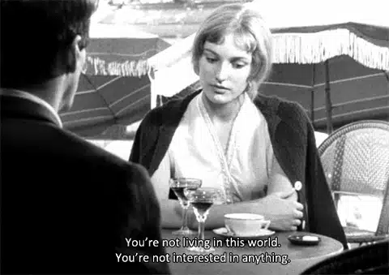
这样的“米歇尔”只是少数人么?
我的身上有他的影子，身边百无聊赖、对什么都提不起兴致的朋友很多，走过阴霾钻在牛角尖里孤芳自赏的人也有很多。
现代社会极大地扩展了个人的能力范围，人类的每一个需要都能够找到相应的产品来满足自己，人们不再需要权威，人们讨厌说教，每个人都要定义自己的人生，每个人都要按自己想要的方式生活。
这样的情况下，道德、信仰甚至是法律的权威都会破灭，丧失了这些指向标，人们会陷入到一种无目的、无方向的游荡，这种游荡是疲惫、困顿和消沉的，会带来极大的精神折磨。
到最后，人们会发现自己的人生还是需要方向的，但是他们已经蔑视了所有的道德、信仰和法律，他们已经走在一个无法回到过去、但又找不到未来的绝望境地里。
所以，超人出现了。
在希特勒的演讲中，“超人”是其中一个反复出现的词语，“缔造一个光荣伟大的日耳曼民族”是他给德国指出的方向。
当时，德国经过一战的失败，信仰衰亡找不到方向，所以希特勒取代了上帝成为了德国人的希望，但却将德国带向了地狱。
这样给人指路的超人很多，红太阳在二十世纪到处升起，却让无数人万劫不复。
毫无疑问，超人之路是一条毁灭之路。
前面走不通，只能重返信仰，可是极端骄傲自我的米歇尔连坐牢和死亡都不怕，他怎么会有力量谦卑悔改，回头是岸。
贾樟柯曾这样评价《扒手》：
他以一种几乎是白描的笔法，不事张扬地勾勒出了一个看上去极其现实的物质世界。但是在这样一个世界的背后，你可以感受到有一种完全形而上、非常灵性的东西在跃动——这是一种通过日常的生活细节凸现出来的人的精神状态。
贾樟柯注意到了这部电影闪现出来的灵性之光，他将其归结于人的精神状态。
事实上我们还要再往前走一步，布列松用细节凸现出了人的精神状态，而人的精神状态又凸现出来上帝的律法和救赎。
从《乡村牧师日记》到《死囚越狱》再到《扒手》，布列松的电影永远都是困境之下的某个人。
他们因为长期处于某种精神困境之中而表情僵硬，主人公总是用日记的方式描绘着他们心中的挣扎和软弱，当走过虚无的绝望后，信仰成为他们最大的希望。
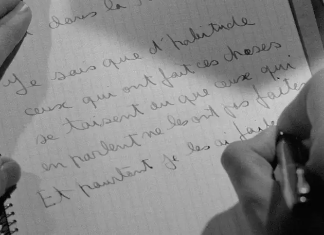
《扒手》也是一样，米歇尔的原型是陀思妥耶夫斯基《罪与罚》中的拉斯柯尼科夫，他虽然觉得偷窃理所应当，但上帝放在他心中的良心拷问一直存在，他深深知道，他这样的生活方式是错误的，只是他不会去面对和承认。
当珍妮不解地问他，“你就不怕审判么”。
米歇尔说：我们受什么东西审判？是法律？法律都是废话。
珍妮接着问：你没有信仰吗？
米歇尔回答：我信上帝，但只有三分钟！
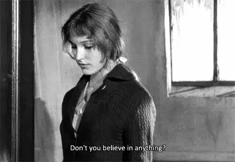
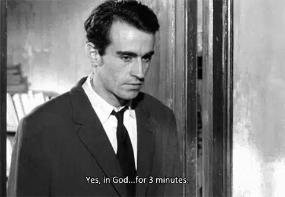
米歇尔的回答非常有意思，他还没有疯狂到否定上帝的地步，但是他给自己找了一个完美的借口“信神三分钟”。
只有三分钟的良心拷问，三分钟后，上帝是上帝，我是我，敬畏会消失，疯狂将燃起。
其实，要么不信，要信就是永远。
米歇尔用这个借口搪塞虽然看上去很矛盾甚至很可悲，但某种程度上，它也是上帝罪与罚律法存在的明证，米歇尔还有着通往永恒的知觉。
而彻底让米歇尔走出困境的不是他自己，而是珍妮。
表现上看，是珍妮用爱情救赎了米歇尔，如果细细想想，你就会发现不论是外表还是行为，珍妮的身上有着圣母玛利亚的形象（布列松为天主教徒）。

当米歇尔对卧病在床的母亲不闻不问时，珍妮只是邻居，但她却无私地照顾着他的母亲。
当米歇尔打算偷窃时，珍妮竭力阻止他误入歧途。
当米歇尔被捕入狱后，只有珍妮来看望他。
珍妮知道米歇尔是小偷，知道他偷了母亲的钱，知道他所有的不堪和龌龊，但是珍妮拥抱了他。
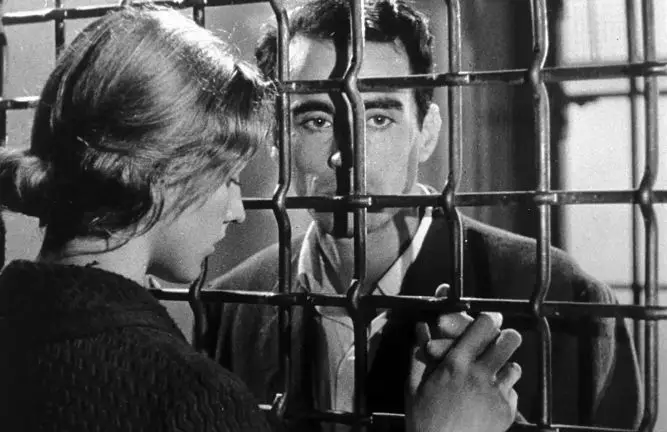
神就是爱，这毫无条件的爱改变了米歇尔。
《圣经》中说“如今常存的有信，有望，有爱；这三样，其中最大的是爱”。
耶稣用十字架的爱成就了上帝的律法和对人类的拯救，爱拥有改变人心的力量，爱能彻底唤醒沉睡的灵性和敬畏之心。
只有爱才能让教义变成生命，爱中才没有惧怕，才敢于敞开自己的软弱和无助。
最后，米歇尔在写给珍妮的信中说：
我还有一件事没有说，我为什么活着？ 我下不了决心.....珍妮，为了和你在一起，我走了一条多么奇异的道路。
米歇尔的这句话充满了重生后对自己过往的自嘲，在走向信仰之前，他兜兜转转一直活在自己创造的梦魇之中，他走了一段很长很长的弯路.....
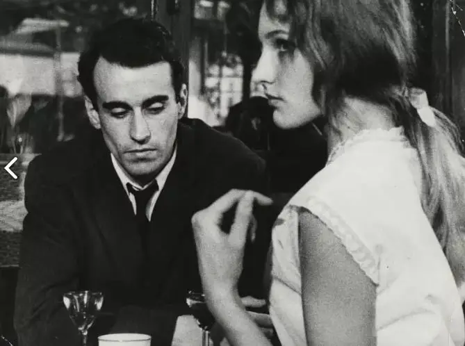
明白了电影的深意，再来看电影的形式，整部电影在竭力去故事化和极简，演员的表演也在弱化，布列松一直喜欢用非职业演员，然后一个镜头拍上五十来条，当演员疲惫不堪的行动和说话时，这就是布列松一直在等的状态。
那才是处于精神困顿之下的真实状态，而演员面无表情也起到对于观众的间离效果，布列松非常排斥蓄意煽情，他尊重观众，他不想要通过玩弄表情让观众完全沉浸在情感共鸣之中，他想要让观众置身事外去和电影对话。
怀着这样的理念去拍电影本身就是一件很伟大的创举，因此布列松一直是电影界公认的头号知识分子，影响了无数电影大师，有网友评价说：
有些电影是拍给大众看的，有些电影是拍给电影爱好者看的，有些电影是拍着电影制作者看的，布列松的电影是拍给导演看的。
的确，光是布列松的这种创作理念和形式就让人受益匪浅，而他作品背后的思想内涵更是一个宝藏，他的电影总能够给信仰困境者以亮光和提醒。
软弱不必回避，困倦不必掩埋，心中缺乏敬畏须要承认，走在弯路上要警醒，离群索居当归回。
最重要的是，不要忘记仰望，不要忘记去爱和接受爱，直等到重生的那一刻。

滑动下方区域
查看完整歌词
▼
Spend my evenings down the riverside
在河边度过我的傍晚时光
my favorite place when you’re not here
这是我最爱的地方 但你不在这里
awaiting dusk to throw a tinted smile
等待黄昏划过那道晚霞
for every nightfall brings you near
因为每夜都有你的身影
I long to…
我渴望
Give all I hold for you and twirl inside
给你我所有的一切 内心波涛汹涌
come closer in, caress your soul
在安慰你的灵魂的时候靠近一点
so come and find me down the waterline
来吧 到河边来找我
we’ll stroll a bit and then go home.
我们会走一会儿 然后回家
推荐阅读
▼
（点击图片即可获取全文）
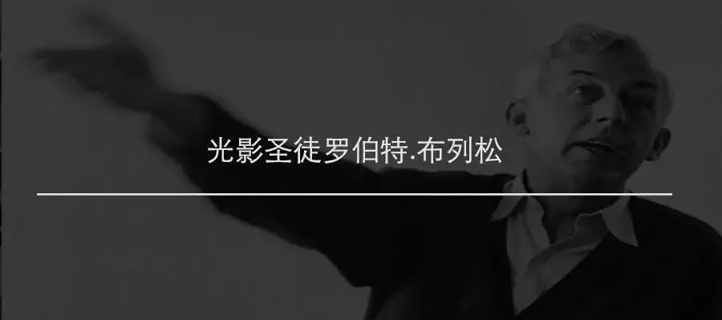
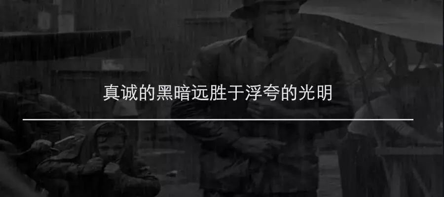

这里没有挑逗你眼目情欲的小鲜肉
也没有挑动你肉体情欲的段子
更没有膨胀你今生骄傲的鸡血
我们只在乎那些最质朴真诚的作品
在那里我们才能恢复真正的想象力
我们也坚信这才是我们真正需要的

ID:Six_hundred_hits
长按二维码，一键关注
【六百击】
-END-
电影评论
尽情分享朋友圈

苹果打赏通道
小提示：文末广告是腾讯配送广告，内容与本号无关，但您的每次点击（无需反复点）都会给平台带来几毛收益，欢迎您点击支持六百击。